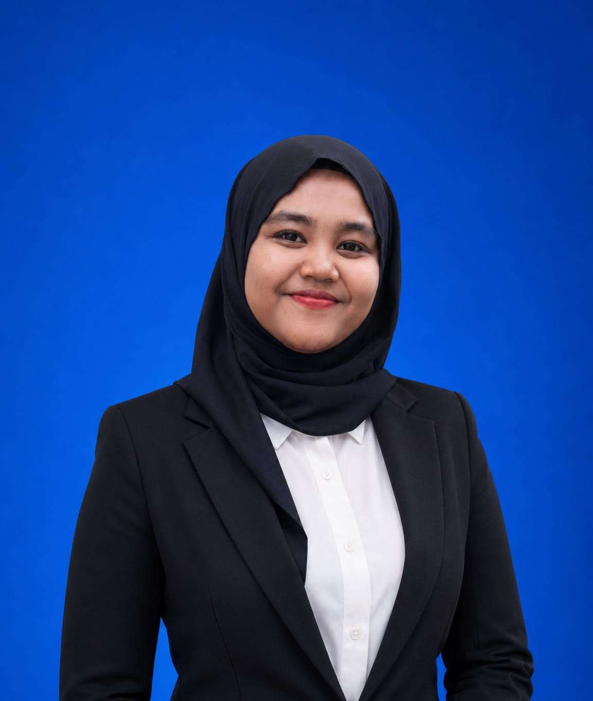

Hai, Saya Siti Zalikha Fartia 👋
Saya adalah seorang mahasiswi yang sedang menempuh pendidikan di bidang teknologi informasi. Saya memiliki ketertarikan besar pada web development dan desain UI/UX. Saya suka membuat tampilan website yang cantik, lembut, dan nyaman digunakan.
Nama
:
SITI ZALIKHA FARTIA
NIM
:
24105111111
TTL
:
Sigli, 12 Juni 2006
Gender
:
Perempuan
Agama
:
Islam
Alamat
:
Keulibeut, Tumpok Laweung
Keahlian
HTML & CSS
Membuat struktur & tampilan website yang rapi dan responsif.
UI/UX Design
Merancang tampilan antarmuka yang cantik dan mudah digunakan.
JavaScript
Menambahkan interaksi dan fungsi dinamis pada website.
Responsive Design
Memastikan website tampil optimal di semua ukuran layar.
Pendidikan
- 2024 - sekarang : Kuliah (NIM 24105111111)
- Sebelumnya : SMA/SMK ...